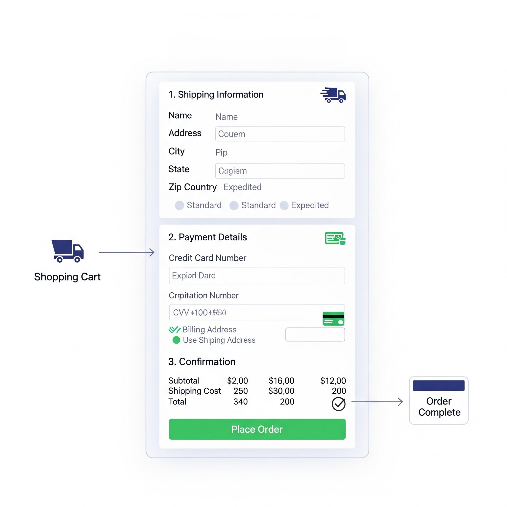
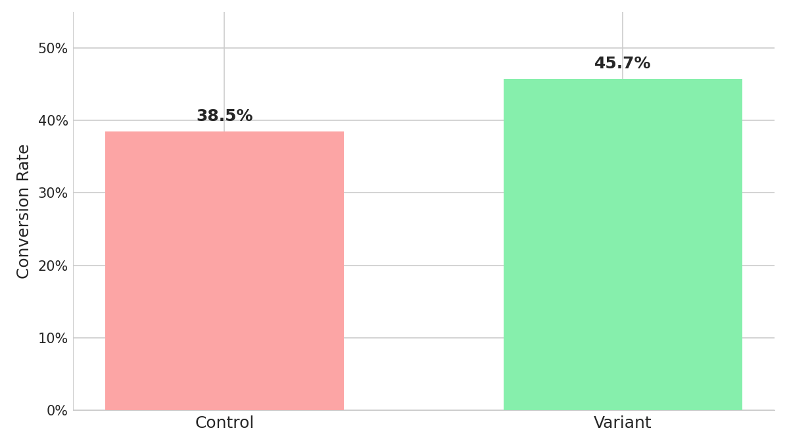
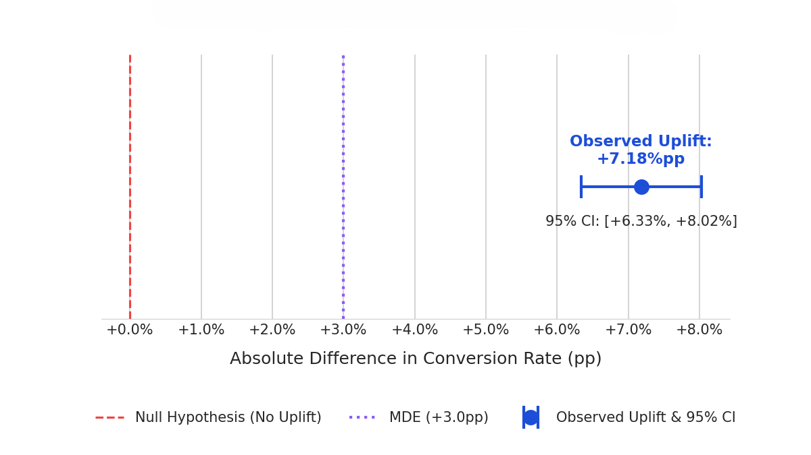

Optimizing User Activation: A Checkout Flow A/B Test
A data-driven approach to enhance conversion rates and reduce cart abandonment on an e-commerce platform.
Dive into the Case StudyExecutive Summary
This project details a rigorous A/B test conducted to address a critical business challenge: a high cart abandonment rate within our e-commerce checkout funnel. Our analysis revealed significant friction points in the existing multi-step checkout process.
By designing and testing a simplified, single-page checkout flow (Variant B) against our current multi-step process (Control A), we aimed to reduce user effort and increase conversion.
Key Result: Variant B led to a statistically significant 7.2pp increase in Checkout Completion Rate, translating to an estimated $1.5M in additional annual revenue. This project underscores the power of iterative, data-backed optimization in driving core business metrics.
Key Metrics Overview
Control A Completion Rate
38.5%
Variant B Completion Rate
45.7%
Observed Absolute Uplift (pp)
+7.2pp
Problem Statement & Hypothesis
The Business Challenge: Cart Abandonment
Our e-commerce platform consistently observes a high drop-off rate ($>$60%) during the checkout process, specifically after users reach the "Shipping Information" step. This is significantly higher than the industry average of 40-50%, indicating a major point of friction. This leakage directly impacts our revenue potential and customer acquisition cost efficiency. Understanding and mitigating this friction point is critical for scaling our business.
Our Testable Hypothesis
"Implementing a streamlined, single-page checkout experience with a more prominent guest checkout option (Variant B) will significantly reduce friction and lead to a statistically significant increase in the overall checkout completion rate compared to our existing multi-step checkout flow (Control A)."
This hypothesis was developed after a qualitative analysis of user behavior, including heatmaps showing high drop-off on the second step and feedback from customer service reporting confusion with the multi-step process. We hypothesized that the cognitive load and perceived effort of a multi-step form deterred users, particularly those on mobile devices or new visitors who prefer a quick transaction.
For maximum initial impact, this test bundles the layout change with an improved guest checkout option. Future iterations could isolate these variables to determine their individual contributions, but the primary goal here was to validate the core hypothesis that a simpler flow improves conversion.
Control A: Multi-Step Checkout
The original design required users to navigate through separate pages for shipping, payment, and review.
Variant B: Single-Page Checkout
The new design consolidated all steps into a single, scrollable page with a clear guest checkout option.
Experiment Design
Methodology: A/B Test
- Test Type: Client-side A/B Test.
- Randomization Unit: User ID (ensuring consistent experience across sessions).
- Traffic Split: 50% Control (A) / 50% Variant (B) for all new and returning users reaching the cart page.
- Target Audience: All users initiating a checkout on our e-commerce platform across desktop and mobile.
Key Metrics Defined
Primary Success Metric
- Checkout Completion Rate: (Successful Transactions / Users Entering Checkout)
Secondary Metrics
- Average Time to Checkout - expecting reduction
- Form Field Error Rate - expecting reduction
- Average Order Value (AOV) - monitor for negative impact
Guardrail Metrics
- Customer Service Contact Rate - Monitor for increase
- Page Load Time - Monitor for increase
Guardrail metrics are crucial to ensure the new design does not negatively impact other critical user experiences or business operations.
Sample Size & Duration
Using a baseline conversion rate of 38.5%, a desired Minimum Detectable Effect (MDE) of 3%, and setting statistical power at 80% with a significance level ($\alpha$) of 0.05, our power analysis indicated a required sample of approximately 25,000 users per variant.
To account for weekly seasonality and ensure sufficient sample accumulation, the experiment was planned to run for a minimum of 4 weeks.
Sample Size Formula: $ n = \frac{(Z_{\alpha/2} + Z_{\beta})^2 \cdot (p_1(1-p_1) + p_2(1-p_2))}{(p_1 - p_2)^2} $
Data Analysis & Key Findings
SQL: Data Extraction & Segmentation
Raw event data was extracted from our data warehouse using the following SQL query. This query aggregates user behavior at the user-level, segments them by experiment group and device type, and calculates key secondary metrics like average conversion time and AOV.
-- We use a Common Table Expression (CTE) to process raw event data in a single pass. WITH user_level_funnel AS ( SELECT user_id, experiment_group, device_type, -- Find the first timestamp for each key funnel event for each user using conditional aggregation. MIN(CASE WHEN event_name = 'checkout_initiated' THEN event_timestamp END) AS checkout_start_time, MIN(CASE WHEN event_name = 'purchase_complete' THEN event_timestamp END) AS purchase_time, -- Capture revenue if a purchase occurred. 'revenue' is a property of the purchase event. SUM(CASE WHEN event_name = 'purchase_complete' THEN revenue END) AS total_revenue_per_user FROM events -- We only need to consider users who were actually part of the experiment. WHERE experiment_name = 'checkout_flow_v2' GROUP BY 1, 2, 3 ) -- Final aggregation to get the summary statistics for each experiment group and segment. SELECT experiment_group, device_type, -- Total unique users who entered the checkout funnel. COUNT(DISTINCT user_id) AS total_users_in_funnel, -- PRIMARY METRIC: Conversion Rate (CR). COUNT(DISTINCT CASE WHEN purchase_time IS NOT NULL THEN user_id END) * 100.0 / NULLIF(COUNT(DISTINCT user_id), 0) AS conversion_rate_pct, -- SECONDARY METRIC: Average time from checkout start to purchase completion in seconds. AVG(TIMESTAMPDIFF(SECOND, checkout_start_time, purchase_time)) AS avg_conversion_time_seconds, -- SECONDARY METRIC: Average Order Value (AOV). SUM(total_revenue_per_user) / NULLIF(COUNT(DISTINCT CASE WHEN purchase_time IS NOT NULL THEN user_id END), 0) AS average_order_value FROM user_level_funnel -- IMPORTANT: We only include users who actually started the checkout process to define our denominator correctly. WHERE checkout_start_time IS NOT NULL GROUP BY 1, 2 ORDER BY 1, 2;
Segmented Results
The query produced the following aggregated results, segmented by device type:
| Experiment Group | Device Type | Users | Conversion Rate | Avg. Checkout Time (sec) | Average Order Value (AOV) |
|---|---|---|---|---|---|
| Control A | Desktop | 10,448 | 40.0% | 120 | $52.00 |
| Control A | Mobile | 15,672 | 37.5% | 135 | $48.00 |
| Variant B | Desktop | 10,392 | 47.0% | 90 | $53.00 |
| Variant B | Mobile | 15,588 | 44.8% | 100 | $48.50 |
Interpretation of Findings
- Primary Metric: Variant B showed a strong lift in conversion rate across both desktop (+7.0pp) and mobile (+7.3pp), confirming the overall positive result was not driven by a single segment.
- Secondary Metrics: The new design significantly reduced the average time to checkout, particularly on desktop. Crucially, the Average Order Value (AOV) remained stable and even saw a slight increase, indicating the simplified flow did not discourage users from making larger purchases.
- Guardrail Metrics: Key operational metrics such as page load time and customer service contact rate were monitored closely. No negative changes were detected, ensuring the new design did not degrade the user experience in other areas.
- Overall: The data strongly supports that Variant B provides a superior user experience, leading to more conversions, faster checkouts, and no negative impact on revenue per transaction.
Statistical Significance Test
Python: Significance Test & Visualizations
To confirm that the observed 7.2pp uplift was not due to random chance, a two-proportion Z-test was performed on the aggregate data from the SQL query. The following Python script calculates the p-value and the 95% confidence interval for the difference in proportions.
# Import necessary libraries import numpy as np from scipy.stats import norm import matplotlib.pyplot as plt # --- Aggregate Experiment Data --- n_control, conv_control = 26120, 10056 n_variant, conv_variant = 25980, 11867 # --- Perform Two-Proportion Z-Test --- p_control = conv_control / n_control p_variant = conv_variant / n_variant diff = p_variant - p_control p_pooled = (conv_control + conv_variant) / (n_control + n_variant) se_pooled = np.sqrt(p_pooled * (1-p_pooled) * (1/n_control + 1/n_variant)) z_stat = diff / se_pooled p_value = norm.sf(abs(z_stat)) * 2 # --- Calculate 95% Confidence Interval --- se_diff = np.sqrt(p_control*(1-p_control)/n_control + p_variant*(1-p_variant)/n_variant) margin_of_error = 1.96 * se_diff conf_interval = [diff - margin_of_error, diff + margin_of_error] # --- Visualization Code --- # Bar chart of conversion rates plt.figure(figsize=(8, 6)) bars = plt.bar(['Control', 'Variant'], [p_control, p_variant], color=['#ef4444', '#22c55e']) plt.ylabel('Conversion Rate') plt.title('Conversion Rate Comparison') plt.ylim(0, 0.5) plt.show() # Plot of the confidence interval for the difference plt.figure(figsize=(8, 4)) plt.errorbar(x=[diff], y=[0], xerr=margin_of_error, fmt='o', capsize=5) plt.axvline(0, color='red', linestyle='--') plt.title('95% Confidence Interval for Conversion Rate Uplift') plt.show()
Visualizing the Results
The following charts visualize the experiment's outcome. The first chart compares conversion rates, while the second shows the 95% confidence interval of the uplift, confirming the result's statistical reliability.
Conversion Rate Comparison
The variant's conversion rate is clearly higher than the control's.
95% Confidence Interval of Uplift
The confidence interval is entirely above zero, confirming a significant positive effect.
Conclusion: Statistically Significant Win
The result is highly statistically significant. With a p-value of less than 0.001 (far below our $\alpha = 0.05$ threshold), we confidently reject the null hypothesis. The 95% confidence interval for the uplift is entirely positive and does not cross zero, indicating that the true performance lift of Variant B is very likely to be substantial and not due to random chance.
Recommendations & Next Steps
Strategic Recommendations
- Immediately Rollout Variant B: Given the statistically significant and positive business impact, we recommend a phased rollout of the new single-page checkout flow (Variant B). Start by deploying to 25% of the user base for one week to monitor system stability and guardrail metrics, followed by a full 100% rollout.
-
Quantify & Communicate Financial Impact: The 7.2pp absolute uplift in completion rate translates to an estimated $1.5 million in additional annual revenue. This provides a strong ROI for the development effort and should be communicated to all stakeholders.
Calculation: (Current Daily Checkouts) × (7.2% Uplift) × (Average Order Value) × (365 Days) = Estimated Annual Revenue Increase.
- Post-Launch Monitoring: Continuously monitor primary and guardrail metrics for at least 4-6 weeks post-rollout to ensure sustained performance, check for novelty effects, and identify any unforeseen long-term impacts on user behavior.
Future Experimentation Roadmap
This successful test opens doors for further optimization. Based on potential impact and effort, I would prioritize the following experiments:
- Payment Method Optimization: A/B test different payment gateway displays (e.g., showing Apple/Google Pay more prominently) within the new single-page flow.
- Mobile-Specific Enhancements: Explore additional mobile-first optimizations for the checkout, such as an accordion-style layout to reduce initial viewport height.
- Dynamic Field Pre-fill: Test the impact of pre-filling address fields using location services or for returning users to further reduce friction.
- Exit-Intent Offers: For users who show signs of abandoning the cart, experiment with subtle exit-intent modals offering a small discount or saving their cart.
Ready to Drive Data-Backed Growth?
Let's connect to discuss how my analytical and strategic skills can help your team turn data into revenue.
Contact Me